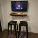
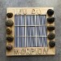
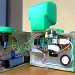
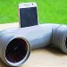
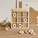
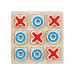
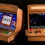
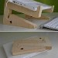

Club des Makers Écoresponsables & Fablab Créatif : (Vendredi 12h30 -> 13h30)
Présentation :

Nous sommes ravis de vous présenter le "Club des Makers Écoresponsables & Fablab Créatif" de notre école. Notre club est un lieu d'innovation, de réparation, de créativité et de responsabilité environnementale. Ici, nous croyons en la puissance de l'action positive pour changer notre monde.
- Sensibilisation Environnementale : Notre club s'engage à réduire notre impact environnemental en encourageant la réparation, la réutilisation et le recyclage des objets. Nous voulons développer une conscience écologique chez nos membres.
- Comprendre et Fabriquer/Réparer : Explorez le fonctionnement des objets et participez à la fabrication de nouveaux projets, comme des jeux de société personnalisés ou la conception d'appareils innovants.
- Compétences Pratiques : Les membres auront l'opportunité d'acquérir des compétences pratiques telles que la réparation d'objets défectueux, et l'utilisation de matériel informatique et des outils du Fablab, comme les imprimantes 3D, les découpeuses laser et les logiciels de conception assistée par ordinateur (CAO).
- Créativité et Innovation : Nous encourageons l'expression de la créativité. Les membres auront l'occasion de participer à des projets de réparation, de conception et de proposer des idées novatrices pour résoudre des problèmes.
- Solidarité Internationale : Participez à des projets de collecte et de remise en état de matériel informatique destiné à être envoyé au Bénin via une association partenaire.
Nous recherchons des membres passionnés et engagés, quel que soit leur niveau de compétence initial. Nous encourageons la diversité des compétences et des profils. Idéalement, un Maker est quelqu'un qui possède ou souhaite développer une ou plusieurs compétences parmi les suivantes :
- Esprit Logique : Analyse et résolution de problèmes techniques.
- Modélisation 3D : Création de modèles pour la fabrication.
- Réparation et Reconditionnement : Aptitude à diagnostiquer et réparer des objets.
- Créativité : Capacité à concevoir des projets originaux et innovants.
- Compétences en Communication : Pour collaborer et promouvoir les projets du club.
- Gestion de Projet : Organisation, gestion du budget et respect des délais.
Pour toute question ou pour soumettre votre formulaire d'inscription, contactez M. Rambeau en salle AUDIOA.
- Nombre de Makers Maximum : 10 membres. Ne tardez pas à vous inscrire !
Session d'Automne :


Les élèves inscrits sont :
- 6°6 MELLANGER Maïlys
- 6°6 MERCIER LouAnn
- 6°5 DULONS June
- 6°4 LEPERRIER Maxence
- 6°4 HAMEYE Nabilaye
- 6°3 MARIE Arthur
- 5°5 DEY Louis
- 5°2 MONTOIS Mélina (semaine A)
- 5°2 PUPAT DE RENTY Irène (semaine A)
Session d'Hiver :


Formulaire d'Inscription au Club des Makers Écoresponsables & Fablab Créatif :

- Nom et Prénom :
- Classe :
- Rédigez une courte lettre de motivation expliquant pourquoi vous seriez un bon candidat pour ce club.
- Parlez de vos centres d'intérêts, de vos compétences et de ce que vous pourriez apporter au club
- Avez-vous déjà des connaissances ou des expériences dans un des domaines suivants ? décrivez vos expériences si applicable Esprit Logique (analyse, résolution de problèmes techniques) / Modélisation 3D (création de modèles pour la fabrication) / Réparation et Reconditionnement (diagnostiquer et réparer des objets) / Créativité (conception de projets originaux et innovants) / Compétences en Communication (collaborer et promouvoir les projets) / Gestion de Projet (organisation, gestion du budget et respect des délais)
- Décrivez un projet que vous aimeriez réaliser ou une idée que vous aimeriez explorer au sein du club. Soyez créatif et imaginez un projet innovant que vous pourriez mener dans le cadre du club
Engagement :
- Êtes-vous prêt à vous engager à respecter les règles du club et à participer activement à ses projets ?
Date de Soumission :
Exemples de projets









